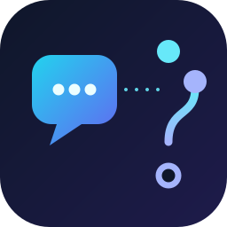

01 · Explore
Repository discovery
Fetch repository metadata and inspect the file tree without downloading every file's contents.

Chat2gitChat2git connects MCP-compatible AI assistants to your GitHub repositories. Browse repository structure, read files, inspect branches and commits, compare changes, and search code — with optional write access disabled by default.
Node.js 20+ · Windows, macOS and Linux · MCP stdio · Local HTTP dashboard · No runtime npm dependencies
A focused GitHub connector for repository understanding and controlled maintenance, exposed as MCP tools and a local dashboard/API.
Fetch repository metadata and inspect the file tree without downloading every file's contents.
Read selected text files with a configurable maximum response size to keep context bounded.
Review branch names, recent commits, code search results and differences between refs.
Create branches, update or delete files, and open pull requests only after local write access is enabled and a call carries its approval flag.
Connect from MCP-compatible AI clients using a local stdio server configuration.
Choose a repository and inspect it through a browser dashboard served on the loopback interface.
Chat2git is intended for one user on their own machine. It is not a hosted GitHub service and should not be exposed to a LAN or the public internet.
The server accepts loopback binding only and validates host/origin headers.
The GitHub token is used by the local process and is not returned by API routes.
Set CHAT2GIT_ALLOW_WRITES=true yourself to expose write tools; each write also requires approved: true.
Security note: enabling write operations allows an MCP client to make repository changes when it submits the required approval flag. This is an API-level flag, not a separate human confirmation prompt. Review changes in GitHub.
Run Chat2git locally with Node.js 20 or later. Public repository browsing can work without a token; add a fine-grained GitHub token for private repositories, code search or writes.
git clone https://github.com/jeet1511/chat2git.git
cd chat2gitcp .env.example .env
# Add a fine-grained GITHUB_TOKEN only if needednpm startVisit http://127.0.0.1:4317, enter a GitHub repository URL, and inspect it. For MCP, configure your client with the absolute path to src/mcp-server.mjs.
An MCP server exposes tools and context to an MCP-compatible AI client. Chat2git exposes GitHub repository inspection and controlled write operations through that interface.
No Chat2git-hosted cloud service is included. The local process calls the GitHub API directly. Your AI client may still receive file contents you ask it to read, so follow that client's privacy and data-handling rules.
Those tools are unavailable unless the operator enables writes in the local environment. When enabled, write calls must include approved: true. This is an API-level approval flag, not a separate human confirmation prompt.
Clients that support MCP servers over stdio can configure Chat2git. The current implementation is local-only and does not provide a remote hosted connector endpoint.
Basic public repository browsing and reading can work without a token. Code search, private repository access and write operations require an appropriately scoped GitHub token.
Chat2git is intended for Windows, macOS and Linux and requires Node.js 20 or later.
Chat2git is distributed under the MIT License. Review the repository's LICENSE file for exact terms.